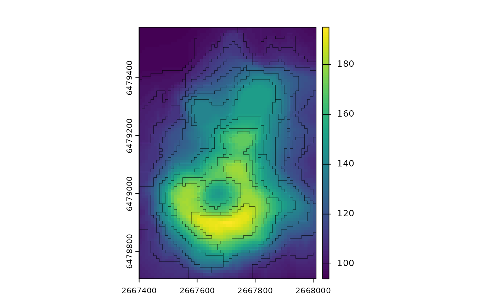

Creates supercells based on single- or multi-band spatial raster data. It uses a modified version of the SLIC Superpixel algorithm by Achanta et al. (2012), allowing specification of a distance function.
Usage
supercells(
x,
k,
compactness,
dist_fun = "euclidean",
avg_fun = "mean",
clean = TRUE,
iter = 10,
transform = NULL,
step,
minarea,
chunks = FALSE,
future = FALSE,
verbose = 0
)Arguments
- x
An object of class SpatRaster (terra) or class stars (stars)
- k
The number of supercells desired by the user (the output number can be slightly different!). You can use either
korstep. It is also possible to provide a set of points (ansfobject) asktogether with thestepvalue to create custom cluster centers.- compactness
A compactness value. Larger values cause clusters to be more compact/even (square). A compactness value depends on the range of input cell values and selected distance measure.
- dist_fun
A distance function. Currently implemented distance functions are
"euclidean","jsd","dtw"(dynamic time warping), name of any distance function from thephilentropypackage (seephilentropy::getDistMethods(); "log2" is used in this case), or any user defined function accepting two vectors and returning one value. Default:"euclidean"- avg_fun
An averaging function - how the values of the supercells' centers are calculated? It accepts any fitting R function (e.g.,
base::mean()orstats::median()) or one of internally implemented"mean"and"median". Default:"mean"- clean
Should connectivity of the supercells be enforced?
- iter
The number of iterations performed to create the output.
- transform
Transformation to be performed on the input. Currently implemented is "to_LAB" allowing to convert RGB raster to a raster in the LAB color space. By default, no transformation is performed. (This argument is experimental and may be removed in the future).
- step
The distance (number of cells) between initial supercells' centers. You can use either
korstep.- minarea
Specifies the minimal size of a supercell (in cells). Only works when
clean = TRUE. By default, whenclean = TRUE, average area (A) is calculated based on the total number of cells divided by a number of supercells Next, the minimal size of a supercell equals to A/(2^2) (A is being right shifted)- chunks
Should the input (
x) be split into chunks before deriving supercells? EitherFALSE(default),TRUE(only large input objects are split), or a numeric value (representing the side length of the chunk in the number of cells).- future
Should the future package be used for parallelization of the calculations? Default:
FALSE. IfTRUE, you also need to specifyfuture::plan().- verbose
An integer specifying the level of text messages printed during calculations. 0 means no messages (default), 1 provides basic messages (e.g., calculation stage).
Value
An sf object with several columns: (1) supercells - an id of each supercell, (2) y and x coordinates, (3) one or more columns with average values of given variables in each supercell
References
Achanta, R., Shaji, A., Smith, K., Lucchi, A., Fua, P., & Süsstrunk, S. (2012). SLIC Superpixels Compared to State-of-the-Art Superpixel Methods. IEEE Transactions on Pattern Analysis and Machine Intelligence, 34(11), 2274–2282. https://doi.org/10.1109/tpami.2012.120
Nowosad, J. Motif: an open-source R tool for pattern-based spatial analysis. Landscape Ecol (2021). https://doi.org/10.1007/s10980-020-01135-0
Examples
library(supercells)
library(terra)
#> terra 1.6.2
library(sf)
#> Linking to GEOS 3.10.2, GDAL 3.4.3, PROJ 8.2.0; sf_use_s2() is TRUE
# One variable
vol = rast(system.file("raster/volcano.tif", package = "supercells"))
vol_slic1 = supercells(vol, k = 50, compactness = 1)
plot(vol)
plot(st_geometry(vol_slic1), add = TRUE, lwd = 0.2)

# RGB variables
# ortho = rast(system.file("raster/ortho.tif", package = "supercells"))
# ortho_slic1 = supercells(ortho, k = 1000, compactness = 10, transform = "to_LAB")
# plot(ortho)
# plot(st_geometry(ortho_slic1), add = TRUE)
#
# ### RGB variables - colored output
#
# rgb_to_hex = function(x){
# apply(t(x), 2, function(x) rgb(x[1], x[2], x[3], maxColorValue = 255))
# }
# avg_colors = rgb_to_hex(st_drop_geometry(ortho_slic1[4:6]))
#
# plot(ortho)
# plot(st_geometry(ortho_slic1), add = TRUE, col = avg_colors)